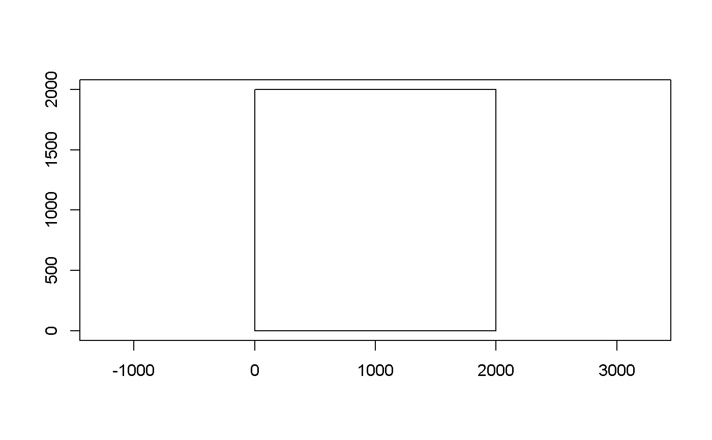
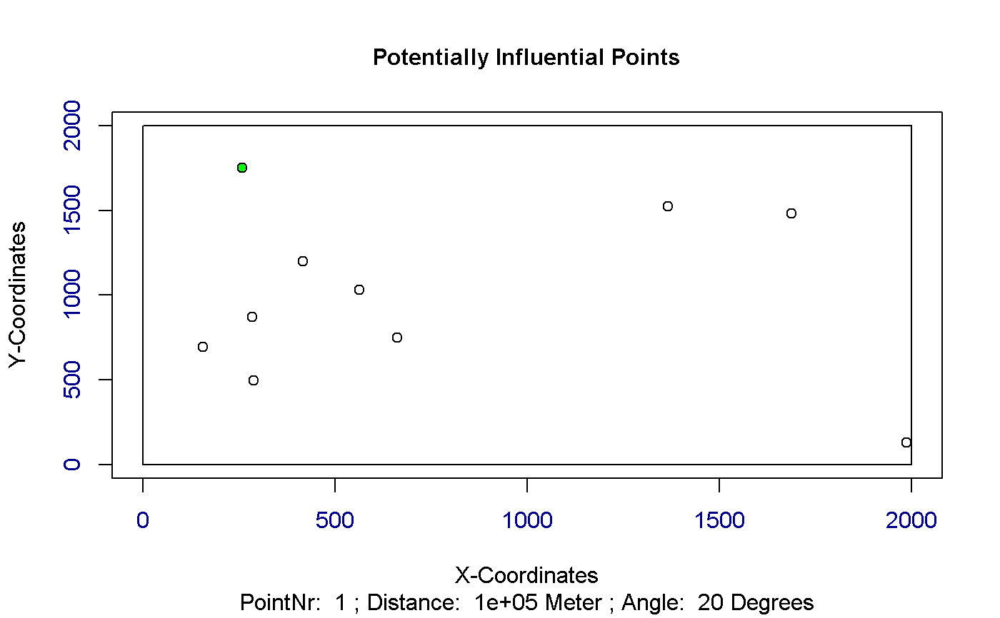
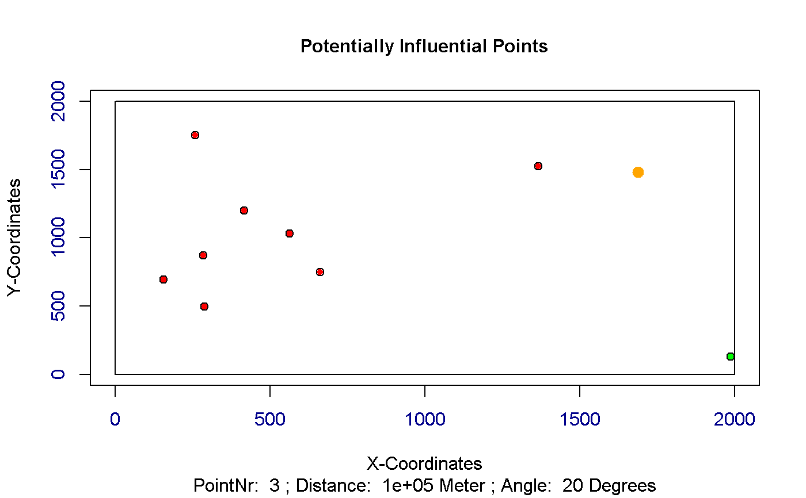
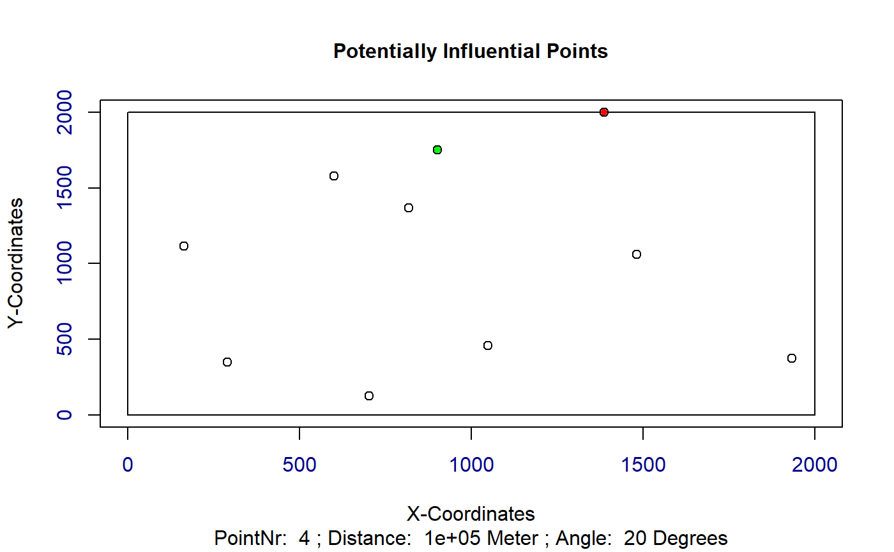
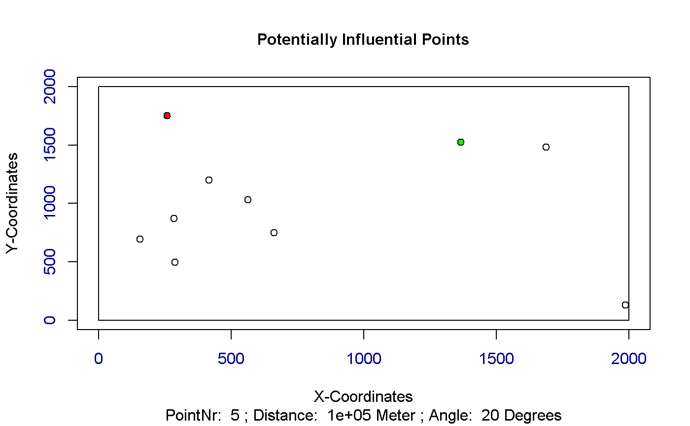
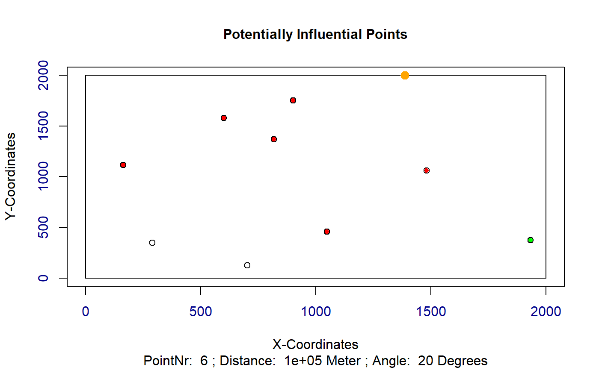
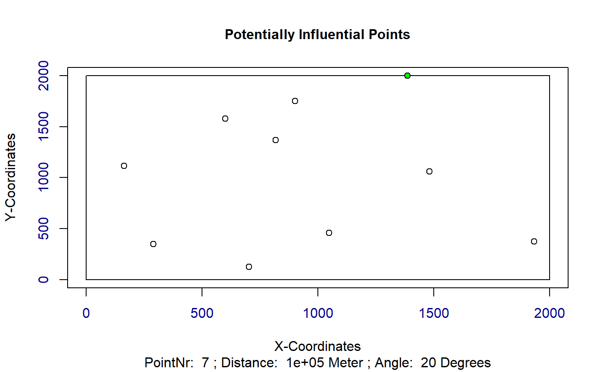
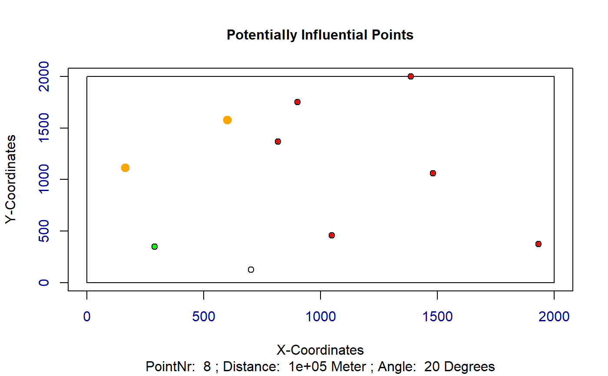
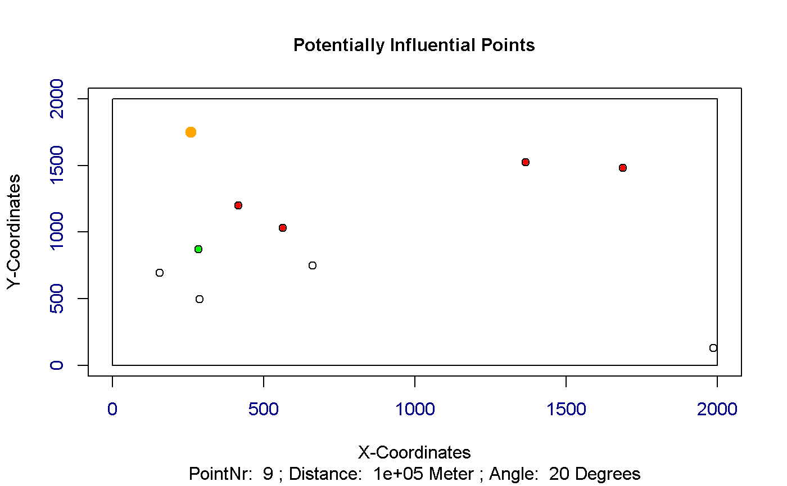
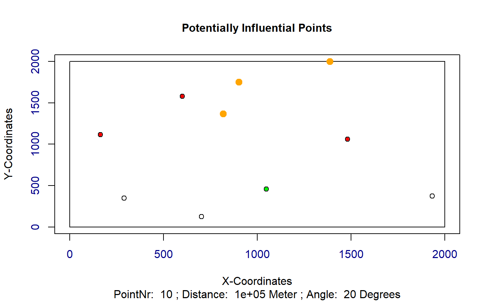

R/get_dist_angles.R
get_dist_angles.RdCalculate distances and angles for a turbine and all it's potentially influencing turbines.
get_dist_angles(t, o, wkl, distanz, polYgon, plotAngles)
| t | A matrix of the current individual with x and y coordinates |
|---|---|
| o | A numeric value indicating the index of the current turbine |
| wkl | A numeric value indicating the angle, at which no wake influences are considered. Default is 20 degrees. |
| distanz | A numeric value indicating the distance, after which the wake effects are considered to be eliminated. Default is 100km. |
| polYgon | A shapefile representing the considered area |
| plotAngles | A logical variable, which is used to plot the distances and angles. Default is FALSE |
Returns a matrix with the distances and angles of potentially influencing turbines
Other Wind Energy Calculation Functions: barometric_height,
calculate_energy,
turbine_influences
library(sp) library(raster) ## Exemplary input Polygon with 2km x 2km: polYgon <- Polygon(rbind(c(0, 0), c(0, 2000), c(2000, 2000), c(2000, 0))) polYgon <- Polygons(list(polYgon),1) polYgon <- SpatialPolygons(list(polYgon)) Projection <- "+proj=laea +lat_0=52 +lon_0=10 +x_0=4321000 +y_0=3210000 +ellps=GRS80 +towgs84=0,0,0,0,0,0,0 +units=m +no_defs" proj4string(polYgon) <- CRS(Projection); plot(polYgon, axes = TRUE)## Create a random windfarm with 10 turbines t <- as.matrix(cbind(x = runif(10, 0, raster::extent(polYgon)[2]), y = runif(10, 0, raster::extent(polYgon)[4]))) wnkl <- 20 distanz <- 100000 ## Evaluate and plot for every turbine all other potentially influencing turbines potInfTur <- list() for (i in 1:(length(t[,1]))) { potInfTur[[i]] <- get_dist_angles(t = t, o = i, wkl = wnkl, distanz = distanz, polYgon = polYgon, plotAngles = TRUE) }potInfTur#> [[1]] #> Ax Ay Bx By Cx Cy Laenge_C Laenge_B Laenge_A alpha betha gamma #> [1,] 0 0 600.9253 1578.43 0 0 0 0 0 0 0 0 #> #> [[2]] #> Ax Ay Bx By Cx Cy Laenge_C Laenge_B #> [1,] 1386.52 1998.625 1482.049 1058.754 1386.52 1058.754 944.7134 939.8711 #> Laenge_A alpha betha gamma #> [1,] 95.52893 5.803639 84.19636 90 #> #> [[3]] #> Ax Ay Bx By Cx Cy Laenge_C Laenge_B #> [1,] 901.4255 1750.45 818.7491 1369.009 901.4255 1369.009 390.2981 381.4409 #> Laenge_A alpha betha gamma #> [1,] 82.67645 12.22956 77.77044 90 #> #> [[4]] #> Ax Ay Bx By Cx Cy Laenge_C Laenge_B Laenge_A alpha betha gamma #> [1,] 0 0 901.4255 1750.45 0 0 0 0 0 0 0 0 #> #> [[5]] #> Ax Ay Bx By Cx Cy Laenge_C Laenge_B #> [1,] 600.9253 1578.430 702.4791 126.9024 600.9253 126.9024 1455.076 1451.528 #> [2,] 818.7491 1369.009 702.4791 126.9024 818.7491 126.9024 1247.537 1242.107 #> [3,] 901.4255 1750.450 702.4791 126.9024 901.4255 126.9024 1635.692 1623.548 #> Laenge_A alpha betha gamma #> [1,] 101.5537 4.002082 85.99792 90 #> [2,] 116.2700 5.347709 84.65229 90 #> [3,] 198.9465 6.986088 83.01391 90 #> #> [[6]] #> Ax Ay Bx By Cx Cy Laenge_C Laenge_B #> [1,] 1386.52 1998.625 1932.796 373.9057 1386.52 373.9057 1714.097 1624.719 #> Laenge_A alpha betha gamma #> [1,] 546.2762 18.58409 71.41591 90 #> #> [[7]] #> Ax Ay Bx By Cx Cy Laenge_C Laenge_B Laenge_A alpha betha gamma #> [1,] 0 0 1386.52 1998.625 0 0 0 0 0 0 0 0 #> #> [[8]] #> Ax Ay Bx By Cx Cy Laenge_C Laenge_B #> [1,] 600.9253 1578.430 289.2176 348.5643 600.9253 348.5643 1268.7523 1229.8661 #> [2,] 163.3992 1113.708 289.2176 348.5643 163.3992 348.5643 775.4192 765.1436 #> Laenge_A alpha betha gamma #> [1,] 311.7078 14.222055 75.77795 90 #> [2,] 125.8184 9.338014 80.66199 90 #> #> [[9]] #> Ax Ay Bx By Cx Cy Laenge_C Laenge_B Laenge_A alpha betha gamma #> [1,] 0 0 163.3992 1113.708 0 0 0 0 0 0 0 0 #> #> [[10]] #> Ax Ay Bx By Cx Cy Laenge_C Laenge_B #> [1,] 818.7491 1369.009 1048.89 457.4257 818.7491 457.4257 940.186 911.5836 #> [2,] 901.4255 1750.450 1048.89 457.4257 901.4255 457.4257 1301.406 1293.0245 #> [3,] 1386.5200 1998.625 1048.89 457.4257 1386.5200 457.4257 1577.748 1541.1992 #> Laenge_A alpha betha gamma #> [1,] 230.1413 14.168994 75.83101 90 #> [2,] 147.4648 6.506269 83.49373 90 #> [3,] 337.6296 12.356554 77.64345 90 #>